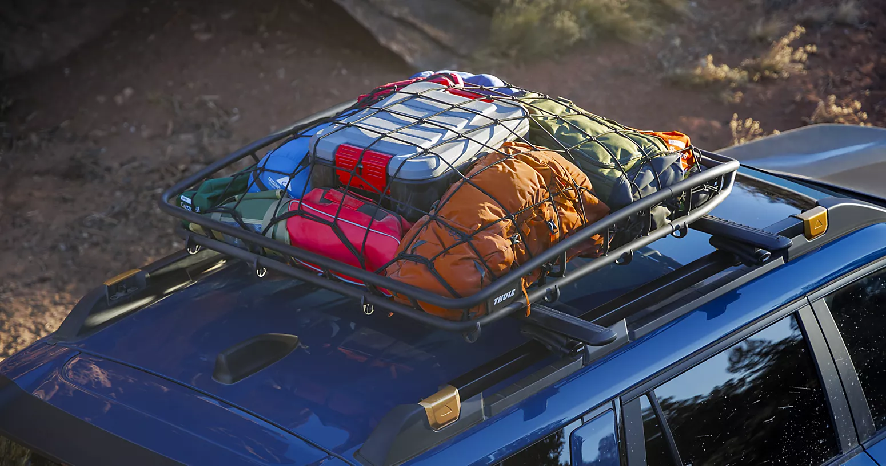
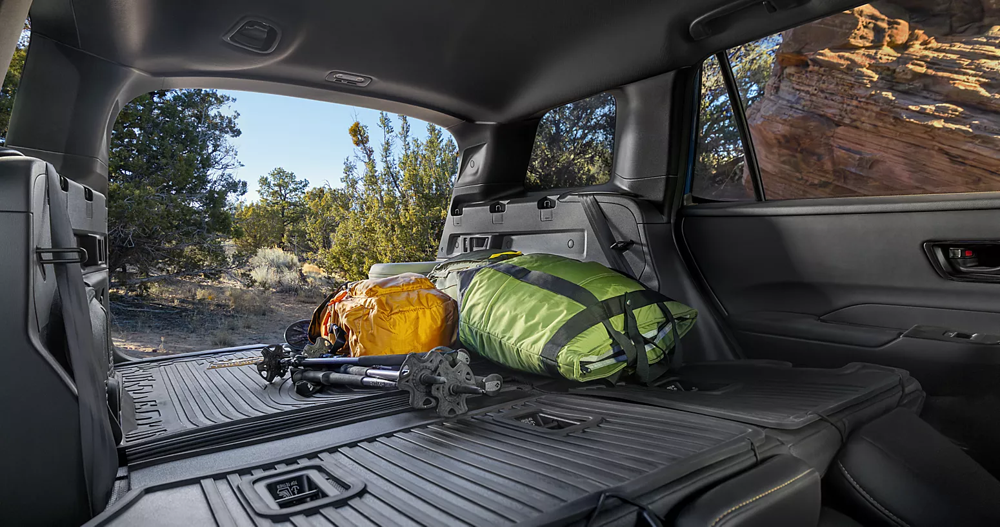

For Southern Nevada buyers cross-shopping these two, the Subaru Outback is the stronger desert-and-road-trip vehicle when you actually leave I-15: standard Symmetrical All-Wheel Drive engages permanently rather than reactively, the cargo bay and roof-rail system are sized for Utah and Arizona park trips, and the longer wheelbase rides better on broken desert pavement.
The Toyota RAV4 is the stronger pick when your driving is mostly Las Vegas commuting: its lighter footprint and segment-leading hybrid efficiency translate to lower fuel cost on the Spaghetti Bowl and Summerlin Parkway runs you make every week.
FINDLAY SUBARU OF LAS VEGAS · OUTBACKA Subaru Outback with a kayak strapped to the roof rack at Findlay Subaru of Las Vegas, the recreation-meets-AWD crossover sized for Utah and Arizona park trips.
01The spec sheet
Head-to-head specs at a glance.
The honest spec comparison across the two vehicles most cross-shoppers weigh.
Figures reflect 2025 and 2026 model-year publications from Subaru.com and Toyota.com; trim packaging and EPA numbers refresh, so re-pull at the deal sheet. Call Sales at 725-245-1156 for the current numbers on a specific trim.
2026 Subaru Outback vs 2026 Toyota RAV4
Factor
Outback2026 Subaru
RAV42026 Toyota
Body style
Wagon-crossover, longer wheelbase
Compact crossover SUV
AWD
Symmetrical All-Wheel Drive, standard every trim
Dynamic Torque Vectoring AWD on most trims; standard on Hybrid and Prime AWD
Standard powertrain
2.5L boxer with CVT
2.5L inline-four, 8-speed auto; Hybrid and Prime variants available
Towing capacity
Up to 3,500 lbs (Wilderness) / 2,700 lbs base
Up to 3,500 lbs (Adventure / TRD Off-Road gas) / 1,750 lbs Hybrid
Cargo behind 2nd row
~32.6 cu ft
~37.6 cu ft
Cargo with rear seats folded
~75.6 cu ft
~69.8 cu ft
Ground clearance
8.7 in / 9.5 in Wilderness
8.1 to 8.6 in (by trim)
EPA combined (gas AWD)
~29 mpg combined
~30 mpg combined
EPA combined (hybrid)
Not offered for 2026 Outback
~39 to 40 mpg combined (Hybrid AWD)
Roof rails + crossbars
Standard integrated roof rails on most trims
Roof rails on most trims; crossbar varies
Driver-assist (standard)
Subaru EyeSight
Toyota Safety Sense 3.0
IIHS recognition
Top Safety Pick / Top Safety Pick+ recipient in recent years
Top Safety Pick / Top Safety Pick+ recipient in recent years
Desert + road-trip pick
Outback
2026 Subaru
Body style
Wagon-crossover, longer wheelbase
AWD
Symmetrical AWD, standard every trim
Powertrain
2.5L boxer with CVT
Towing
3,500 lbs Wilderness / 2,700 lbs base
Cargo (behind 2nd row)
~32.6 cu ft
Cargo (seats folded)
~75.6 cu ft
Ground clearance
8.7 in / 9.5 in Wilderness
EPA gas AWD
~29 mpg combined
Hybrid
Not offered for 2026
Driver-assist
Subaru EyeSight (standard)
Commuter + hybrid pick
RAV4
2026 Toyota
Body style
Compact crossover SUV
AWD
Dynamic Torque Vectoring AWD (most trims)
Powertrain
2.5L I-4, 8-speed auto; Hybrid & Prime
Towing
3,500 lbs Adventure / 1,750 lbs Hybrid
Cargo (behind 2nd row)
~37.6 cu ft
Cargo (seats folded)
~69.8 cu ft
Ground clearance
8.1 to 8.6 in
EPA gas AWD
~30 mpg combined
Hybrid
~39 to 40 mpg combined
Driver-assist
Toyota Safety Sense 3.0 (standard)
Two honest reads on that table. Cargo: the RAV4 has more room behind the second row for everyday use; the Outback has more total volume with the seats folded, which matters for a Zion or Bryce road trip with adults plus gear. Fuel economy: Toyota wins outright on the hybrid cross-shop, because the 2026 Outback lineup is not offered as a hybrid. Gas-to-gas the RAV4 still has a small advantage. We lead with that because pretending otherwise would not survive a five-minute Google session.
Spec disclosure · Figures reflect 2025 and 2026 model-year publications from Subaru.com and Toyota.com. Manufacturers periodically refresh trim packaging and EPA figures, so any number used on a deal sheet should be re-pulled at the time of purchase. Call 725-245-1156 for current numbers on a specific trim.
02The drivetrain
AWD systems compared.
This is the column that matters most for desert driving, and it is where the two vehicles diverge philosophically.
Subaru Symmetrical All-Wheel Drive is standard on every Outback trim. It is a mechanical, full-time system. Power is split between the front and rear axles continuously, always sending torque to all four wheels. There is no "front-wheel drive until slip is detected" mode. When the front tires lose grip on a sand-wash crossing or a flash-flood puddle, no clutch pack has to engage first because the rear axle is already driven. The drivetrain is arranged on the vehicle's centerline, which keeps left-right balance close to even.
Toyota Dynamic Torque Vectoring AWD (on RAV4 Limited and Hybrid Limited trims) is an electronically controlled, on-demand system. The default state on dry pavement is front-wheel drive; the rear axle engages through a coupling and a rear differential capable of varying torque side-to-side, which helps in cornering. The tradeoff is the engagement step: the rear axle has to be commanded in before it contributes traction.
Full-timeOutback
Symmetrical AWD
Mechanical, always on. Power is continuously split front and rear. No clutch pack to engage before the rear axle contributes traction. Standard on every Outback trim.
On-demandRAV4
Dynamic Torque Vectoring AWD
Electronic, FWD by default. Rear axle engages through a coupling when slip is detected. Vectors torque side-to-side at the rear differential, which helps in cornering.
~95%City
Everyday Vegas driving
Either system is fine. The Spaghetti Bowl, the I-15 commute, and parking-lot maneuvers do not stress AWD. Both vehicles handle the everyday loop without breaking a sweat.
~5%Edge
When it matters
Monsoon, snow, sand-wash. A monsoon downpour on the 215, a snow weekend at Lee Canyon, a sand-wash crossing on the way to Valley of Fire. Always-on reaches grip slightly faster than on-demand.
For 95 percent of Las Vegas driving, either system is fine. The difference shows up in the 5 percent: a sudden monsoon downpour on the 215, a snow weekend at Lee Canyon, a sand-wash crossing on the way to Valley of Fire.
In those moments, an always-on mechanical system reaches grip slightly faster than an on-demand electronic one.
03The safety suite
Safety: EyeSight vs Toyota Safety Sense.
Both vehicles ship with mature driver-assist suites as standard equipment, and both have earned recent IIHS Top Safety Pick recognition. Neither is a runaway winner.
Stereo camera
EyeSight depth perception
Cam + radar
Toyota Safety Sense 3.0
TSP/TSP+
IIHS recognition, both vehicles
Std. equipment
Both suites, every trim
Subaru EyeSight Driver Assist Technology
EyeSight uses a stereo camera at the top of the windshield. It provides adaptive cruise control, pre-collision braking, lane departure and sway warning, and lane centering. The stereo-camera approach gives EyeSight depth perception from passive optics, which Subaru has refined across multiple generations.
Toyota Safety Sense 3.0
Toyota Safety Sense 3.0 is the current generation of Toyota's standard suite across the 2025 and 2026 RAV4 lineup. It includes:
Pre-collision with pedestrian detection
Full-speed dynamic radar cruise control
Lane departure alert with steering assist
Lane tracing assist
Automatic high beams
Road sign assist
It pairs a camera with millimeter-wave radar.
What it feels like in practice
In practical terms, both suites brake for stopped traffic, hold lane center on the highway, and ping you for drift. EyeSight's stereo camera is well regarded for low-speed pre-collision response; Toyota Safety Sense 3.0 picks up radar-detectable closing speeds slightly earlier in some scenarios. Confirm current IIHS ratings at iihs.org by trim before you sign.
04The desert factor
Desert and Vegas-specific driving.
This is where Las Vegas buyers should weigh the two vehicles differently than buyers in, say, Portland.
Summer heat tolerance
Both manufacturers engineer for triple-digit ambient temperatures. The Outback's 2.5L gas engine cooling system is sized for sustained AWD operation in heat. The RAV4 Hybrid's high-voltage battery is engineered for high-ambient operation; Toyota commonly publishes high-voltage battery warranty terms at 10 years / 150,000 miles (verify at the deal sheet). Subaru gas-engine warranty terms are the standard 5-year / 60,000-mile powertrain, 3-year / 36,000-mile bumper-to-bumper.
AC load
A 115-degree July afternoon means the AC compressor runs at high duty cycle. The RAV4 Hybrid can run cabin cooling on electric power at low speeds, which reduces engine load at stoplights on Sahara or Tropicana. The gas Outback runs the compressor off the engine the entire time. Las Vegas heat also shortens 12-volt accessory-battery service life on both vehicles, so plan a battery check every spring.

FINDLAY SUBARU OF LAS VEGAS · DESERTA Subaru Outback parked at a desert trailhead with integrated roof rails and the long wagon-crossover cargo bay loaded for a regional road trip.
Freeway cargo for road trips
Las Vegas is the launchpad for Zion (160 miles), Bryce Canyon (260 miles), the Grand Canyon North Rim (270 miles), and Death Valley (120 miles). The Outback's 75.6 cu ft of seats-folded volume plus integrated, rated roof rails matter when the kayaks or rooftop tent come along. The RAV4 carries plenty for a long weekend; for a packed five-day trip with adult passengers, the Outback layout has more room.
The Outback's 8.7 inches (9.5 on Wilderness) ride better on washboard than a shorter, lighter compact crossover.
Broken pavement
Roads outside Pahrump, the access to Valley of Fire, and unpaved stretches near Red Rock reward a long wheelbase and ground clearance. The Outback's 8.7 inches (9.5 on Wilderness) ride better on washboard than a shorter, lighter compact crossover.
05The five-year math
Ownership costs and Las Vegas pricing.
The five-year ownership math splits across maintenance, insurance, and resale.
Maintenance
Subaru recommends standard service every 6,000 miles for oil and inspection on most current Outback engines; Toyota's RAV4 interval is commonly 5,000 to 10,000 miles depending on engine and oil. Findlay Subaru of Las Vegas is a designated Subaru Express Service retailer for expedited routine maintenance.
Insurance
Both are mainstream family vehicles with mature parts networks; neither draws outlier premiums in the Clark County risk pool. Get a real quote from your carrier on your specific VIN before you sign.
Resale
Both carry strong resale value. Five-year comparison favors RAV4 Hybrid in most published Kelley Blue Book and ALG data; the gas-to-gas comparison is closer, and the Outback Wilderness trim holds value well.

FINDLAY SUBARU OF LAS VEGAS · CARGOA Subaru Outback cargo bay with seats folded and integrated roof rails loaded, the seats-folded layout that adds to its road-trip case.
Subaru-specific programs at Findlay
Six program designations carried by this store: Subaru Certified Pre-Owned, Subaru Express Service, Certified Subaru Eco-Friendly Retailer, TradeUp Advantage Program, Love-Encore, and Subaru Parts Online. Recognition includes the 2023 Love Promise Retailer of the Year and the 2026 Subaru Love Promise Heart Award.
Las Vegas pricing comparison
[PENDING: Las Vegas Outback pricing range across base / mid / Wilderness trims for 2026 MY at Findlay Subaru of Las Vegas] [PENDING: Vegas-area RAV4 pricing range for gas AWD and Hybrid AWD trims as advertised by Toyota dealers serving 89118]
What we can publish confidently: Subaru.com and Toyota.com list manufacturer MSRP by trim. Real Las Vegas out-the-door numbers include doc fee, Nevada Government Services Tax (the state's vehicle registration component), title and registration, and any dealer-installed accessories. Our policy at Findlay Subaru of Las Vegas is to put the out-the-door number on paper before you sign. Call Sales at 725-245-1156 for a current quote on a specific Outback trim.
06Pick by buyer
Decision matrix by buyer type.
A short framework for the cross-shopper.
3 Outback
Buyer types favor the Outback
3 RAV4
Buyer types favor the RAV4 Hybrid
6×
Findlay program designations
160+ mi
From Vegas to Zion, the Outback's home turf
Where the Outback wins
The Summerlin family that does Zion, Bryce, and Snow Canyon two to three weekends a quarter. Seats-folded cargo, integrated roof rails, ground clearance, and always-on Symmetrical AWD reward the trip role.
The active retiree with a Pahrump second home and a road-trip pattern. The longer wheelbase rides better on Route 160 and the broken pavement on the way in.
The buyer who wants AWD that does not depend on electronics to engage. Symmetrical All-Wheel Drive is mechanical and standard on every trim.
Where the RAV4 Hybrid wins
The Henderson commuter who drives 35 miles a day on the 215 and rarely leaves town. Fuel economy compounds, and the lighter footprint fits everyday parking.
The single-driver buyer cross-shopping efficiency at any cost. The MPG win is real and the resale curve is strong.
The buyer who wants the lowest fuel cost from a Toyota or Subaru badge today. The 2026 Outback is not currently offered as a hybrid.
Cross-shopping between an Outback and a RAV4? Our sales team can structure the test-drive route so the same stretch of highway and broken pavement are covered in both vehicles. Ask for that when you call.
07How to shop
How to shop the Outback at Findlay Subaru of Las Vegas.
We are at 6455 Roy Horn Way, Las Vegas, NV 89118, serving Las Vegas, Henderson, and Pahrump.
Findlay Automotive Group has operated this store for over five decades.
What we offer on the Outback path
Express Store online buying with home delivery within 100 miles
Subaru Express Service for routine maintenance
TradeUp Advantage Program for buyers stepping up from a current vehicle of any brand
Subaru Certified Pre-Owned inventory if a recent used Outback fits the budget better than new
EV charging stations, customer lounge, complimentary Wi-Fi, snacks and beverages, and a kids playroom; pet-welcome showroom and on-site dog park
To browse Outback inventory, schedule a test drive, or get a trade estimate
Sales:725-245-1156 (Mon-Sat 8:00 AM to 8:00 PM, Sunday closed)
Service:725-677-3193 (Mon-Fri 7:00 AM to 6:00 PM, Saturday 7:00 AM to 5:00 PM, Sunday closed)
Cross-shopping between an Outback and a RAV4? Our sales team can structure the test-drive route so the same stretch of highway and broken pavement are covered in both vehicles. Ask for that when you call.
Frequently asked questions about the Outback vs RAV4.
Is the Subaru Outback better than the Toyota RAV4 for desert driving?
For drivers who actually leave Las Vegas (Zion, Bryce, Snow Canyon, Death Valley, Valley of Fire, Pahrump, or unpaved stretches near Red Rock), the Outback's longer wheelbase, 8.7 inches of ground clearance (9.5 on the Wilderness trim), integrated roof rails, and always-on Symmetrical AWD ride better and engage traction faster than the RAV4's on-demand AWD.
For drivers who stay inside the 215 loop, the RAV4 Hybrid's fuel economy advantage matters more. Both vehicles handle desert heat and both carry recent IIHS Top Safety Pick recognition.
How does Subaru Symmetrical AWD differ from Toyota's RAV4 AWD?
Subaru Symmetrical All-Wheel Drive is a full-time mechanical system that splits power to all four wheels at all times. Toyota's RAV4 AWD systems (including Dynamic Torque Vectoring AWD on Limited trims) are electronically controlled and on-demand: they default to front-wheel drive and engage the rear axle when slip is detected.
In normal driving both are effective. On monsoon-flooded pavement, sand-wash crossings, or sudden Mt Charleston snow, the always-on mechanical system reaches grip slightly faster than the on-demand electronic one.
Which has better fuel economy, the Outback or the RAV4?
In gas-to-gas comparison, the RAV4 has a small EPA combined-mpg advantage over the Outback (approximately 30 mpg vs approximately 29 mpg combined). In gas-Outback versus RAV4 Hybrid comparison, the RAV4 Hybrid wins clearly at approximately 39 to 40 mpg combined.
The 2026 Outback is not currently offered as a hybrid. If fuel economy is your top criterion and your driving is mostly Las Vegas commuting, the RAV4 Hybrid is the stronger pick.
Which is safer, the Outback or the RAV4?
Both have earned IIHS Top Safety Pick or Top Safety Pick+ recognition in recent model years, and both ship standard with mature driver-assist suites: Subaru EyeSight on the Outback, Toyota Safety Sense 3.0 on the RAV4.
EyeSight uses a stereo camera and is well regarded for low-speed pre-collision response; Toyota Safety Sense 3.0 pairs a camera with millimeter-wave radar. Verify current IIHS ratings at iihs.org by trim and model year before you sign.
How much does the Subaru Outback cost in Las Vegas?
Manufacturer MSRP is published at Subaru.com by trim. Real out-the-door pricing in Las Vegas includes doc fee, Nevada Government Services Tax, title and registration, and any selected dealer-installed accessories.
Findlay Subaru of Las Vegas publishes the out-the-door number on paper before you sign. Call Sales at 725-245-1156 for a current quote on a specific Outback trim or visit us at 6455 Roy Horn Way, Las Vegas, NV 89118.
Can I trade in a Toyota RAV4 toward a Subaru Outback?
Yes. Findlay Subaru of Las Vegas accepts any make and model in trade, including a current RAV4. Our TradeUp Advantage Program is built for buyers stepping up from a current vehicle of any brand.
Bring the title, registration, payoff information if you are financing, and both keys. We give you the trade number in writing before you commit to the Outback purchase so the two transactions stay clearly separated on the deal sheet.
09References
External references
Last reviewed by the Findlay Subaru of Las Vegas editorial team · May 12, 2026
Editorial byline
Findlay Subaru of Las Vegas editorial team
With review by Sales Manager byline (pending sign-off).
Findlay Subaru of Las Vegas · 6455 Roy Horn Way, Las Vegas, NV 89118
Outback and RAV4 specifications are described from public Subaru.com and Toyota.com 2025/2026 model-year documentation and cited generally; manufacturers periodically refresh trim packaging and EPA figures, so any number used on a deal sheet should be re-pulled at publish. Las Vegas pricing ranges are marked [PENDING] rather than estimated. For a current Outback quote, call Sales at 725-245-1156.
If a question about the Subaru Outback at Findlay Subaru of Las Vegas is not answered here, call 725-245-1156 and ask for a sales advisor, or browse current Outback inventory at subaruoflasvegas.com.